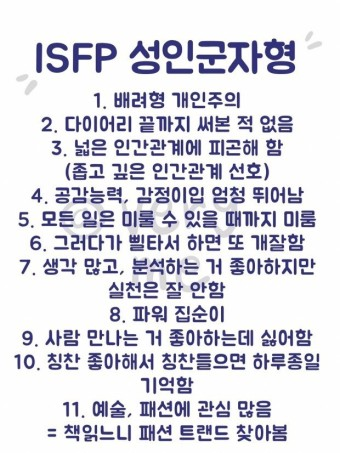

가족관계: 총 4명(부모님, 누나, 나)이고 집안 분위기는 화목하다. 예전부터 저녁에 같이 밥 먹으면서 대화를 많이 하다보니 그런 것 같다.
성격
성격: 굉장히 낯을 가리는 성격이고 내향적이며 집에 나가는 것을 선호하지 않음. 새로운 사람과 친해지기가 굉장히 어려움. 하지만 친해지면 말도 많아지고 활발해짐
취미
취미: 집에 있는 걸 좋아하기 때문에 집에서 넷플릭스로 영화나 드라마를 보는 것을 좋아함. 장르는 호러 빼고는 가리지는 않지만 요즘은 한국 드라마에 푹 빠져있음. 축구 하거나 축구 보는 것도 좋아함. 해게임 하기
MBTI(밑에 사진의 특징과 나의 성격과 거의 유사)

게임
게임: 온라인 게임과 모바일 게임을 하는 것을 매우 좋아하며 리그 오브 레전드라는 게임을 즐겨했었다. 요즘에는 피파온라인4에 빠져서 재미있게 즐기고 있다. 모바일게임은 좀 유명한 회사에서 신작이 나온다고 하면 한번씩 해보는 것 같다. 하지만 금방 질려서 다른 게임으로 넘어간다.
축구
축구: 축구를 예전부터 하는 것도 좋아하고 보는 것도 좋아했다. 축구 직관도 여러 번 간 기억이 있다. 또한, 컴퓨터공학과 과축구 동아리도 하고 있다. 해외축구를 즐겨보고 좋아하는 팀은 토트넘이다. 토트넘을 제일 좋아하는 이유는 손흥민 선수가 토트넘에서 굉장히 잘해주고 있기 때문에 경기를 자주 챙겨보기 때문이다. 제일 좋아하는 선수는 루이스 수아레스라는 선수이다. 위에 영상은 수아레스에게 빠지게 된 영상이다.
학창시절
학창시절: 고등학교 1학년 1학기때까지 안산에서 학교를 다니다가 가족 전부 중국으로 이주하게 되었다. 총 3년 반을 중국에서 살다가 대학을 다니기 위해 다시 한국으로 오게 됨. 한국에서의 학창시절은 그냥 학교와 학원을 열심히 다니며 막 즐겁지는 않은 학창시절을 보냈다. 중국으로 이주 하면서부터는 같은 한국 유학생들과 잘 맞아서 재밌는 타지 생활을 한 것 같다.